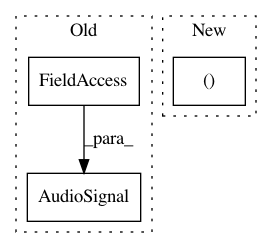

864b1748dd60298cce0e5211d5c4648775446e5c,nussl/Repet.py,Repet,run,#Repet#,86
Before Change
// self.bkgd = self.bkgd.T
self.bkgd = AudioSignal(audio_data_array=bkgd, sample_rate=self.sample_rate)
self.bkgd = AudioSignal.AudioSignal(audio_data_array=self.bkgd, sample_rate=self.sample_rate)
return self.bkgd
def _compute_spectrum(self):
After Change
for i in range(N):
repeating_mask = mask(self.magnitude_spectrogram[:, :, i], S)
repeating_mask[1:self.high_pass_cutoff, :] = 1 // high-pass filter the foreground
repeating_mask = np.vstack((repeating_mask, repeating_mask[-2:0:-1, :].conj()))
stft_with_mask = repeating_mask * self.stft[:, :, i]
y = spectral_utils.e_istft(stft_with_mask, win_len, hop_len, win_type,
reconstruct_reflection=False, remove_padding=True)
In pattern: SUPERPATTERN
Frequency: 3
Non-data size: 3
Instances
Project Name: interactiveaudiolab/nussl
Commit Name: 864b1748dd60298cce0e5211d5c4648775446e5c
Time: 2016-03-10
Author: eth@nmanilow.com
File Name: nussl/Repet.py
Class Name: Repet
Method Name: run
Project Name: interactiveaudiolab/nussl
Commit Name: 159dc24fec0fba88f0524ef7aded7b60b12f3cc5
Time: 2019-03-08
Author: prem@u.northwestern.edu
File Name: nussl/separation/ft2d.py
Class Name: FT2D
Method Name: run
Project Name: interactiveaudiolab/nussl
Commit Name: 41e4848935c2d7dee09b7db666854d7489fa7d6c
Time: 2017-01-27
Author: ethanmanilow@gmail.com
File Name: nussl/repet_sim.py
Class Name: RepetSim
Method Name: run